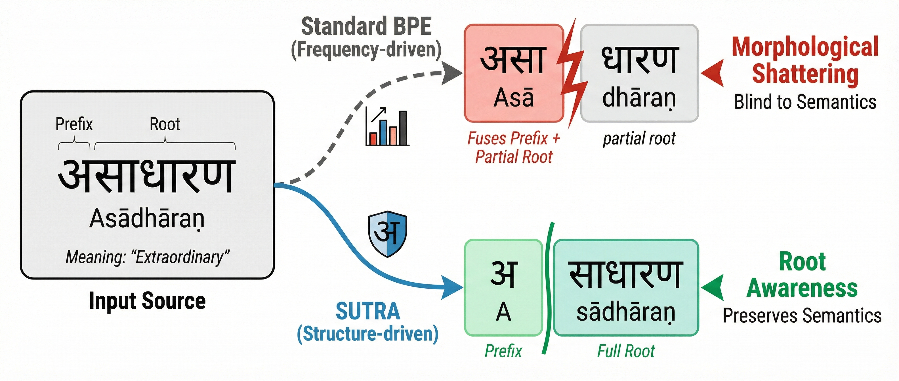

Peak Boundary F1 over BPE (morphological alignment)
+34%
Relative Linear R² gain in Hindi (semantic recoverability)
+8.08
Average chrF2 improvement in machine translation
560k
LLM-verified morphological splits (Hi, Mr, Gu)
Abstract
Existing subword tokenizers optimize statistical compression but ignore morphological structure,
particularly the relationship between roots and affixes. This is harmful for morphologically rich
Indic languages, where basic units are complex orthographic syllables (aksharas) rather than letters.
Frequency-based methods over-fragment words, arbitrarily splitting roots and affixes—a phenomenon we term
Morphological Shattering.
We propose SuTRA (Structurally-Unified Tokenization with Root Awareness), a morphology-aware
algorithm that preserves akshara indivisibility and penalizes merges crossing morphological boundaries.
We also release a new morphological segmentation dataset for Hindi, Marathi, and Gujarati.
SuTRA reduces shattering, achieving peak gains of +14.7% in morphological alignment (Boundary F1)
and +34% in semantic recoverability (Hindi) over BPE. These structural gains yield an average
improvement of +8.08 chrF2 in machine translation.
Key Contributions
SuTRA — a structure-guided extension of BPE combining script-aware akshara grouping, morphology-aligned merge scoring, and a root-preserving boundary constraint with rigidity annealing.
Indic Morphological Gold-Standard Dataset — ~560k LLM-verified morphological splits for Hindi, Marathi, and Gujarati with root restoration.
Comprehensive evaluation — morphological alignment, semantic recoverability, machine translation, and robustness under orthographic perturbations.
Morphological Shattering

Add paper Figure 1 as images/figure1_shattering.png
Figure 1: Morphological Shattering vs. root preservation. For Hindi asādhāran,
standard BPE fuses the negation prefix into the root, while SuTRA cleanly separates prefix and root.
Method
SuTRA operates in two phases. Phase 1 (Pre-tokenization) applies orthographic rules Φ to group
characters into akshara-like units and marks forbidden boundaries using a gold lexicon or a seq2seq model for OOV words.
Phase 2 (Morphology-aware merging) runs BPE-style training with score
S(a, b) = f(a, b) · Ψ(a, b)γt, where Ψ downweights merges that cross morpheme boundaries
and γt is annealed from strict to permissive over training.
Add paper Figure 3 as images/figure3_qualitative.png
Figure 3: Qualitative comparison across tokenizers; SuTRA aligns with gold morphological boundaries.
Morphological Dataset
We construct a gold-standard morphological split dataset for Hindi, Marathi, and Gujarati via a three-stage pipeline:
IndicCorp vocabulary extraction, adapted SampoNLP decomposition, and Gemini-assisted verification with explicit root restoration.
Table 1 — Comparison with existing morphological resources.
Dataset
Langs
Size
Verification
UniMorph 4.0
Multi (partial Indic)
~10M
Algorithmic
MorphyNet
15 (no Indic)
10.6M
Manual (expert)
GujMorph
Gujarati
~80k
None
Ours (Gold)
Hi, Mr, Gu
560k
LLM-verified
Table 2 — Gold standard statistics by language.
Language
Source
Unique words
Hindi
IndicCorp
≈ 160,000
Marathi
IndicCorp
≈ 200,000
Gujarati
IndicCorp
≈ 200,000
Total
≈ 560,000
Results
Morphological alignment
Table 3 — Boundary F1 (↑) and fertility ratio (↓) on gold morpheme segmentations.
Table 5 — Hindi ↔ Marathi translation (3-layer Transformer, 32k vocab, BhasaAnuvaad).
Tokenizer
Hindi → Marathi
Marathi → Hindi
chrF2
COMET
chrF2
COMET
BPE
24.62
0.5054
36.55
0.6253
WordPiece
30.37
0.6093
27.18
0.5223
SentencePiece
25.01
0.4964
28.10
0.5147
Unigram
26.55
0.5157
29.19
0.5349
SuperBPE
15.84
0.3047
16.27
0.3422
MorphTok
26.75
0.5750
29.42
0.6007
SuTRA (Ours)
29.96
0.5752
38.84
0.6554
Morphological robustness
Table 6 — Robustness under synthetic perturbations (10k words per language): Jaccard overlap (↑), root-affected distance (↓).
Tokenizer
Hindi
Marathi
Gujarati
Jac.
R.Aff.
Jac.
R.Aff.
Jac.
R.Aff.
BPE
0.386
0.228
0.305
0.324
0.319
0.296
Unigram
0.363
0.232
0.294
0.340
0.320
0.308
WordPiece
0.413
0.249
0.293
0.355
0.314
0.316
SentencePiece
0.371
0.235
0.298
0.325
0.321
0.287
SuperBPE
0.624
0.146
0.655
0.127
0.631
0.126
MorphTok
0.801
0.067
0.823
0.055
0.792
0.051
SuTRA (Ours)
0.875
0.042
0.885
0.038
0.788
0.040
BibTeX
@inproceedings{rathore2026sutra,
title = {SuTRA: Structurally-Unified Tokenization with Root Awareness},
author = {Rathore, Vaibhav and Gole, Siddhant and Telwadkar, Dadhichi and
Bhatia, Rooshil and Ruparel, Maulik and Surekha, Siddharth and Bhargava, Neha},
booktitle = {Proc. Interspeech 2026},
year = {2026},
url = {https://drive.google.com/file/d/1Me6fn5_VEFrSLhorfP6YdNP-z2wrgh3Y/view?usp=sharing}
}